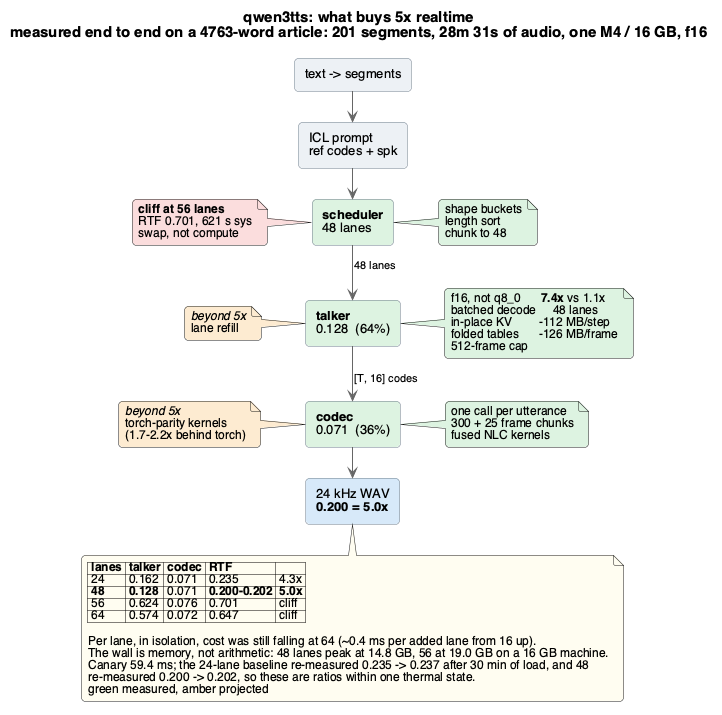
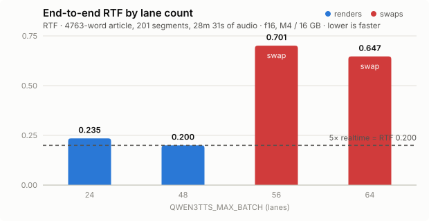

Local text-to-speech in Rust. Three voice-cloning speech models ported from PyTorch, validated stage by stage against fp32 activations dumped from their references. A 1612-word chapter becomes eleven minutes of speech in 1m 44s, on a laptop. One process, no Python at runtime.
Source on GitHub · Apache-2.0 · macOS on Apple silicon
1612 words of prose — examples/chapter.txt in the repo — rendered on one
M4 / 16 GB laptop, each engine in the configuration it ships in. These are the
complete chapters — eleven to thirteen minutes each — in two voices, cloned from two
reference clips of about ten seconds. Ordered by how they sound on this passage, best
first — a listening judgement, not a measured one, so trust your own ears over it.
The files above were rendered at an earlier revision, before the Metal kernels described below; the engine and its settings are otherwise the same. A fresh render of the same chapter now costs 1m 44s rather than three minutes, and word error rate against the reference text moved from 0.038 to 0.036 across it. A sampled model takes a different path through the same text each render, which is why the durations do not match to the second either.
A chapter becomes 11 minutes of speech in 1m 44s, on a laptop — 6.8× faster than realtime. A 16-hour book is about 2.4 hours of compute rather than 11.5.
curl -fsSL https://raw.githubusercontent.com/drmhse/dream-tts/main/install.sh | sh
cd dream-tts && ./scripts/bootstrap.sh
./dream-tts speak --text-file examples/chapter.txt --out chapter.wav
curl is the only prerequisite — no Rust toolchain and no
Python. The default engine, qwen3tts, has no conversion step, and a tagged
release publishes prebuilt Apple-silicon binaries. bootstrap.sh downloads
the checkpoint (~4.3 GB, resumable, sha256-verified) and the correctness fixtures.
Add the other two with bootstrap.sh audio8 cosyvoice — those convert their
checkpoints with PyTorch, which is why they are not the default. --list
prints the ids and what each costs.
dream-tts import book.epub --out prep/ --dry-run # see the split first
dream-tts book book.epub --out narration # kick off; Ctrl-C is safe
dream-tts jobs # what is running, anywhere
dream-tts jobs <id> --control pause --now # stop within seconds
A thousand-page reference book is hours of synthesis, and that length changes what the
software has to be. A run has to survive interruption, so the state does not live in the
process doing the work: dream-tts book submits to dream-tts-serve,
which owns the engine and the queue. A run has to be discoverable by a process that did not
start it, so job records are files — dream-tts jobs answers with no server up,
which is exactly the moment someone is about to start a second run on top of the first.
Resume is the same command: a job's id is a hash of the text and the
settings, so re-running adopts the chapters that finished.
Chapters come from the document itself — the EPUB spine, the DOCX outline levels, the
heading levels in HTML or Markdown, the outline a PDF declares. Markdown is rewritten
before it is spoken, because a *** that reaches the voice is read aloud as
“asterisk, asterisk, asterisk”; about forty rules cover code, LaTeX, units, currency,
dates and tables, each one arrived at by listening to a failure.
dream-tts-serve loads one engine once and answers requests from it — no
per-request model load, which is where the 3.0 second start beats a Python
service’s 15–17. It is wire-compatible with the FastAPI service it replaces,
so an existing client switches by pointing at a different port.
DREAM_TTS_API_KEY=secret ./dream-tts-serve --port 3003
curl -X POST localhost:3003/tts -H "X-API-Key: secret" \
-H 'content-type: application/json' \
-d '{"text":"Hello from Rust.","voice":"voices/cosy-default-male","seed":7}' \
-o out.wav -D headers.txt| route | |
|---|---|
| POST /tts | WAV body, PCM s16le mono |
| POST /tts/stream | incremental: raw PCM as each segment lands, so first audio arrives after one segment |
| GET /v1/capabilities | engines, sample rates, languages, weight formats each supports |
| GET /v1/jobs | narration runs. POST submits one; the same document resubmitted resumes it |
| GET /v1/jobs/<id>/events | server-sent events: per-segment progress and every state change |
| POST /v1/jobs/<id>/<action> | pause, pause-now, resume, cancel, cancel-now |
| GET /health | liveness. Answers only once the model is resident, so a reply means ready |
| GET / | this service’s own page in a browser, JSON to a client — and it lists every run live |
Two things worth knowing. Every response carries its own cost —
x-audio-seconds, x-wall-seconds, x-rtf, and
x-stages with the per-stage split, so a client can see where the time went
without a second request. And voice and seed are per request:
the first picks a voice asset without restarting, the second makes a render reproducible.
What it refuses is as deliberate as what it serves. speed other than 1.0,
mode=instruct and mode=cross_lingual answer
501 with an explanation rather than quietly returning something else —
returning speed-1.0 audio to a client that asked for 1.5 would report the request as
honoured when it was not. So do the Python service’s
/v1/tts-jobs and /v1/alignment-jobs, which this one replaces
with /v1/jobs rather than emulates. Synthesis is serialised behind a semaphore, because two
requests interleaving on one Metal queue make both slower and neither faster.
| engine | RTF (both voices) | wall, fastest | batches | reach for it when |
|---|---|---|---|---|
| qwen3tts | 0.148 | 1m 44s | yes, 48 lanes | the default. Best quality here, and the only one that makes a book practical |
| cosyvoice | 0.703–0.718 | 8m 15s | no | you want the widest language coverage |
| audio8 | 0.527–0.536 | 5m 47s | no | you want 44.1 kHz, the highest-fidelity output here |
Compare wall time, not just RTF: the three do not produce the same duration from the same
text — cosyvoice speaks slowest, 12:48 against audio8’s
11:34 — and RTF divides by audio produced, which flatters a slower-speaking engine.
qwen3tts wins by this much only because it batches across sections, so it
wants length: on a 132-word passage it is 0.397, against 0.544 for audio8
and 0.716 for cosyvoice. Never benchmark it on a paragraph.
Memory is the other axis, and it runs the other way. On that short passage
cosyvoice peaks at 5.0 GB and audio8 at 9.7, against
qwen3tts’s 12.3 — almost all of it the codec decoder’s
activations rather than weights. 16 GB is what the default engine wants.
A smaller machine is better served by a different engine than by a smaller weight format.

Every green component is measured. Together they take the engine to RTF 0.144–0.148 — 6.8× to 6.9× realtime — across corpora between 1612 and 4838 words.
Four of them carry most of it, and two are Metal kernels written here. f16 weights, because only a dense GEMM shares one weight read across lanes. The codec’s convolutions gather their taps inside the GEMM — both conv-as-GEMM routes were losing to assembling the operand rather than multiplying it, 85.8 ms to build the im2col against 8.2 for the GEMM consuming it — which is 1.70× on a codec chunk, and bit-identical output. A GEMM shaped like a decode step, since candle reaches 3.64 TFLOP/s on a 2048-cube but 1.07–2.34 at m = 48. And 48 batched lanes, sorted longest-first, shedding each finished tail: a group runs as long as its longest lane, so ordering decides how much of the batch is real work — 68–70% of lane-steps were useful before, 79–90% now.

Past 48 lanes it swaps, and that is a floor rather than a saturation: a lane costs 13 MB of peak footprint, while the codec’s activations cost gigabytes. The memory analysis is in the README — it is candle’s buffer pool, not the lane count.
Every engine is gated against per-stage fp32 activations dumped from its PyTorch
reference, so a failure localises to a stage rather than to “the audio sounds wrong”.
audio8’s greedy generation is bit-identical to its reference;
cosyvoice’s teacher-forced argmax matches 105/105.
Free-running sampled output is deliberately not gated on equality —
ras_sampling draws from torch’s generator, so a sampled sequence is not
reproducible across implementations. Quality is checked separately by word error rate.
Known limitations, including an undiagnosed regression in two convolution stages, are in
the README.